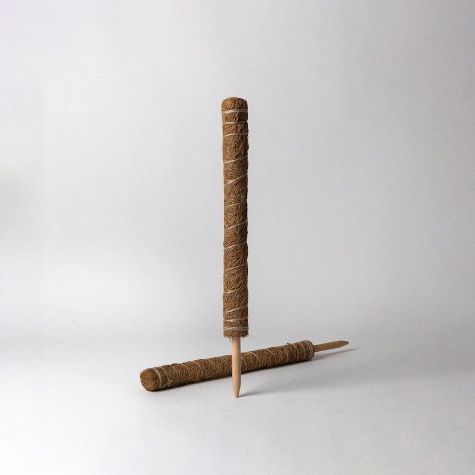
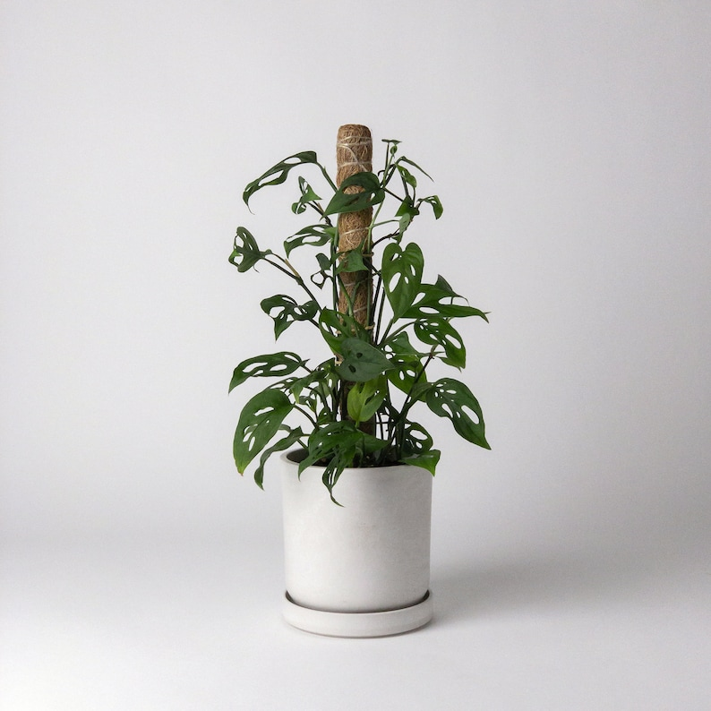
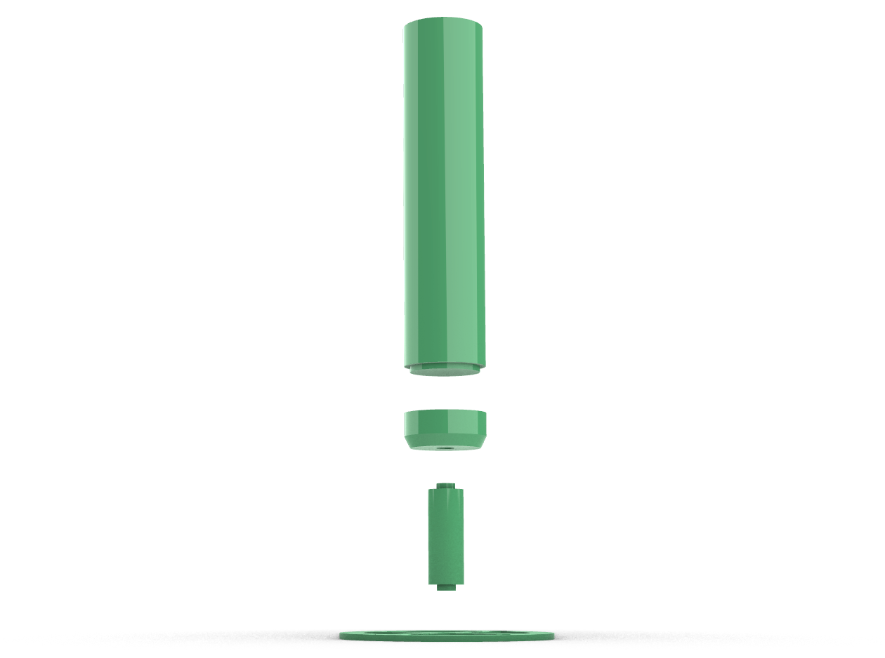
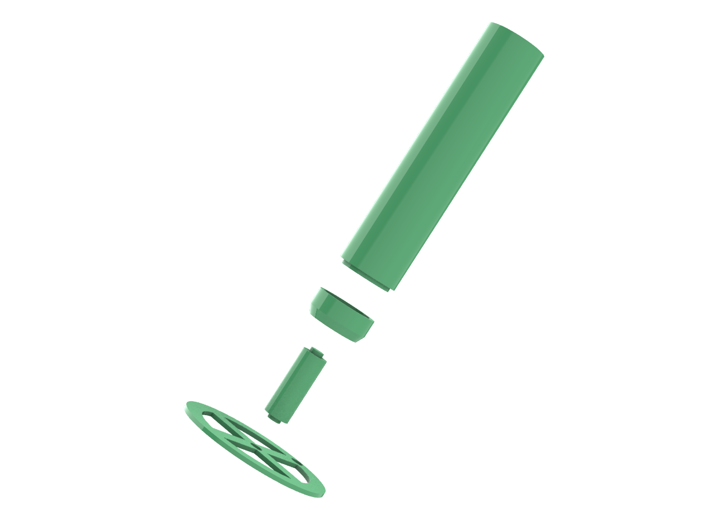
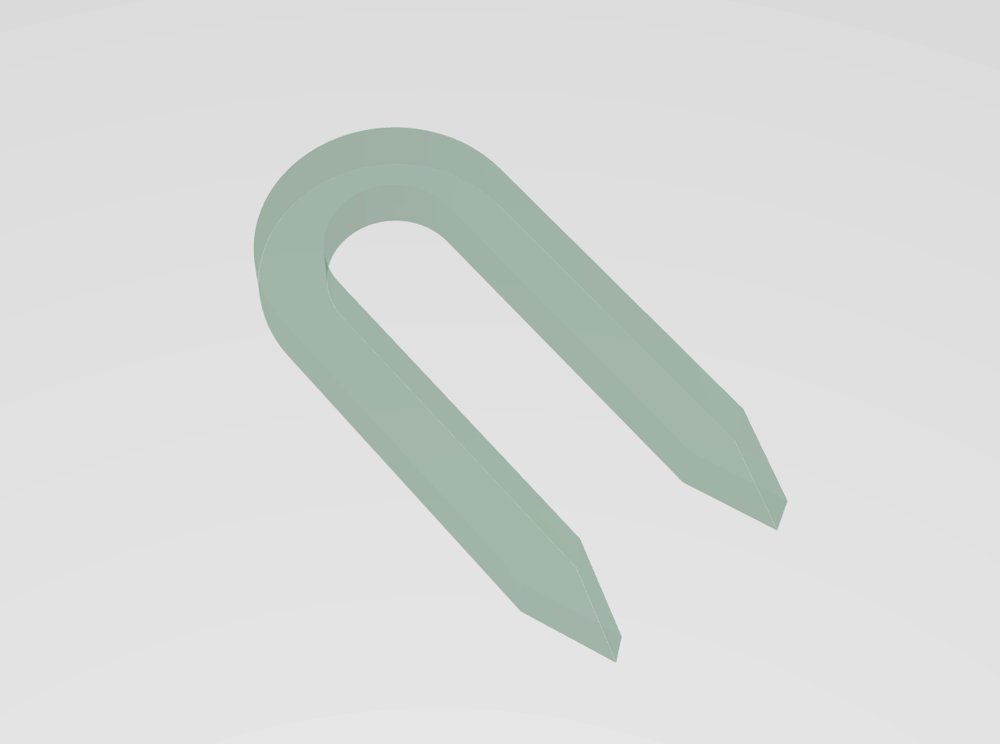
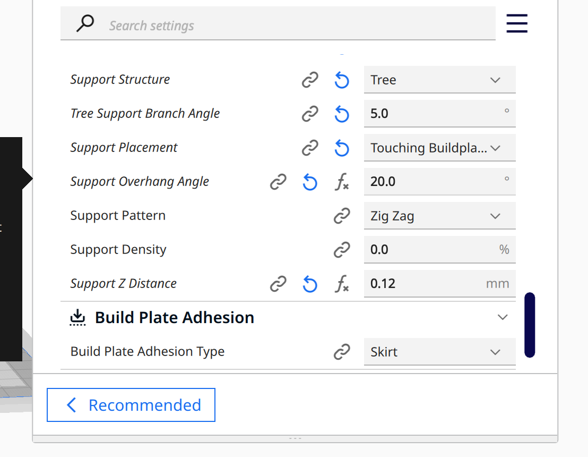

Final Project
Jessica Douma | HCDE 533 | Autumn 2022
Digitally Fabricated Moss Poles and Accessories


For my final project I designed and digitally fabricated a modular moss pole and some accessories (plant clips and decorative moss pole toppers). To complete my project, I leveraged Grasshopper, Rhino, 3D printing, laser cutting, and molding and casting. I heavily relied on Grasshopper so that my designs would be parametric - so while I only printed one 1.5in diameter moss pole, I am easily able and ready to print several other sizes that will support different plants and/or containers.
Concept


Image source: Etsy Listing
Moss poles are used for various climbing houseplants. They are made of or contain various substrate for the roots of the plants to grow into and for the plant to support itself. While many different moss poles can be found in different plant stores, they all have one simple design flaw - because the poles are essentially shaped as just a rod, they do not provide any foundational support. As the moss poles get taller and taller, the plant gets heavier, or just as a result of several waterings, the moss poles eventually begin to lean and or become dislodged.
While digitally fabricated moss poles do exist, many of them perpetuate this basic design flaw and do not provide a foundational base either. While I drew inspiration from other digitally fabricated moss poles, my goal for this project was to design a moss pole that is structurally supported and will not fail over time. I designed plant clips that can be used with the moss pole to easily attach a climbing plant to the pole. A stretch goal of mine was to digitally fabricate decorative toppers that can be added to the tops of the moss poles for aesthetics. Below is the original concept sketch of my design:


My design consists of four main components, as pictured above, all of which screw into each other.
MODULAR MOSS POLE
This is the component of the pole that will actually contain the substrate. It will not be a solid rod, but rather a perforated mesh that will hold the substrate or moss. The top of the moss pole contains a female bolt and the bottom of the moss pole has a male screw. This allows for the moss pole to be screwed into both the anchor adapter and other moss pole sections to further extend it.
ANCHOR ADAPTER
The moss pole will potentially be much wider than the anchor extender. This piece allows for the transition between widths and secures the moss pole section to the rest of the pole.
ANCHOR EXTENDER
This component can either come in various hieghts or be combined with other anchor extenders to reach the desired hieght. The anchor extenders extend the base of the anchor adapter to the top of the plant container or soil. It is thinner than the moss pole section to both save material and minimize the room the entire moss pole takes up within the pot (leaving more room for soil and dirt).
ANCHOR BASE
The base component anchors the moss pole within its container and fits within the base of the container and is held down by the contents of the pot. It contains large cut outs to allow for water drainage. It also contains two mounting options (centered and offset) to support multiple plant and container types. Depending on how this piece sits within the pot, I may need to add additional slits or stilts for better water drainage.

The plant clips are intended to be a simple shape, laser cut from acylic. They are designed to push into the moss pole and hold the stem of the plant against the pole and are designed parametrically.
Technical Documentation
Parametrically Designing the Moss Pole + 3D Printing
My modular moss pole consisted of 4 different pieces - an anchor base, extender, adapter, and moss pole section - as pictured in my concept sketches above. The pieces were all intended to be modular, such that you could trade out or append different pieces as needed to get to your desired size/height moss pole. This meant that:
- You can switch out the anchor base for different sizes, and the extender piece will always fit - no need to print different extenders for different bases
- Extender pieces can be fit together to achieve varying heights, so they can always be re-used
- Just like the base, the adapter always fits the extender - as you need smaller/bigger moss pole sections you can switch them out easily
Screw Mechanism

The screw mechanism was definitely the trickiest part of my final project - I tried multiple tutorials and tried out many "packages" to get it right. After this this tutorial failed and this "package" failed after many test prints and slight adjustments, I finally found a two part YouTube Tutorial that walked me through how to create a screw and cap parametrically. The key to this last solution working, was that it included a tolerance for the threads such that the screw could fit in without getting stuck or jammed - and even the tolerance was parametric so that I could adjust and play with the fit.
The tutorials provided me with an awesome way to parametrically model screws and threads, but now I needed to find the right inputs for my particular design. This involved several test prints. I estimated how wide in diameter the different screws/threads I would need and printed various tests that varied the number of threads, the size of the thread, the height of the screw/thread that would provide enough support, how much infill was required to proviode enough strength to avoid the screw from snapping off whatever surface it was connected to. I found that 80% triangular infill for the screw component was strong enough to keep the screw from snapping off. I also found that while two threads (i.e. the number of twists) sufficed to connect the pieces, 3-4 seemed to provide a little more durability. And lastly, the diameter of the screw didn't seem to have a major effect with the higher infill (i.e. a very small and very wide screw with the same number of threads both worked great).
Because I found this particular mechanism so useful, and likely that I might need it in future designs, I kept an isolated version of it in its own file. The file is well annotated and the inputs are all grouped so that it is easy to use and understand the next time that I need it.
Using this design, I am able to parametrically adjust the:
- Screw/Thread height
- Screw/Thread diamter
- Number of twists
- Twist size
- Twist shape
- Twist fillet
- Thread tolerance
- Thread cap thickness
Anchor Base


The anchor base geometry was pretty straightforward - below is a high level overview of the process I followed:
- Draw two circles and extrude them - one larger than the other and subtract the smaller from the larger to create a tube
- Draw a cross bar and center it within the tube. Duplicate it and rotate it to create both cross sections
- Draw a circle and extrude it to half the height of the object. Use this to subtract the inner, bottom half of the object, creating a lip
- Draw a box to serve as a water draingage cutout and position it centered within one of the crossbars. Create a polar array of the box and subtract them from the object to create multiple drainage cutouts
- Draw a circle, extrude it, and position it at the top and center of the anchor base for the screw threads. Substract the cylinder from the shape
- Position the screw threads within the cutouts created in step 5
- Union all of the resulting objects
Using this design, I am able to parametrically adjust the:
- Anchor diameter
- Anchor height
- Anchor lip thickness (and therefore the drainage slit width since it is tied to this variable)
- Cross section width
- Number of drainage slits
- The screw/thread inputs
To avoid having to print with supports, I rotated this piece 180 degrees before exporting the STL. I printed my final piece at super quality, with 30% infill. Because this piece only had the thread component, I didn't need the extra infill to provide extra strength since there was nothing extruding from it that could easily snap off.
Extender


The extender was another straightforward piece to design - it essentially consisted of a cylinder with a screw on one end and threads on the other. Below is a high-level description of my design:
- Draw the screw part of the extender
- Draw a cylinder and move it up the height of the screw
- Draw the threads for the screw and move it up the height of the screw + the height of the extender
- Union the three objects into one
Using this design, I am able to parametrically adjust the:
- Extender height (not including the screw since this corresponds to the "end" height once the piece has been connected to its counterpart)
- Extender diameter
- The screw/thread inputs
For whatever reason, (a google search told me that the geometry was likely too complicated) the union I performed in Grasshopper only unioned the bottom two pieces when I baked the object in Rhino. This was easily remedied by BooleanUnioning the resulting two pieces in Rhino.
While test printing this component, I printed with both the screw facing down and the screw facing up. Both ways required supports but I found that printing with the screw facing up worked best since it left a cleaner finish, and therefore allowing a tighter fit, on the surface the screw was connected to. While the other method still worked, it required more post-processing to sand down the ridges left by the support. I printed this component at super quality with 80% triangular infill.
Adapter


The adapter was equally straightforward to design as the previous components - it essentially consisted of a tapered cylinder combined with a cylinder (plus the screw and thread mechanism). Below is a high-level description of my design:
- Draw three circles and distribute them along the z-axis, such that the top two are the same size and the bottom one is smaller
- Create a surface from each circle
- Loft the three surfaces, being sure to specify a straight edge loft
- Draw a cylinder that is equal to the extender diameter + some tolerance and subtract it from the tapered section of the object. Position the screw intended to attach to the extender in this empty space
- Position the threads at the top of the oject
- Union the resulting objects
Using this design, I am able to parametrically adjust the:
- Adapter height
- Adapter top/bottom diameter
- Tolerance needed for the extender to connect to the bottom half
- The screw/thread inputs
Similarly to the extender, the union I performed in Grasshopper only unioned the bottom two pieces when I baked the object in Rhino. Performing a BooleanUnion in Rhino worked to quickly combine the two resulting objects into one solid.
While test printing this component, I took my learnings from the extender, and again printed with the screw side (the tapered end) facing up to leave a clean finish and therefore tighter connection on the side that connects to the extender. This also meant that the side that connects to the moss pole was touching the build plate, also leaving a clean and tight connection on that end as well. I printed this component at super quality with 80% triangular infill to provide strength for the screw and where it connected to the adapter.
Moss Pole


The moss pole was the second most challenging part of my final project since I hadn't designed something like this before. I followed this Parametric House Tutorial to learn how to create the outer "mesh" of the moss pole. To create the mesh I really just needed an object to shape the mesh around and the LunchBox plugin to create the diamond structure. While I printed my design with the 'Diagrid Structure' to give my diamond like shapes, I can easily switch out that component with the 'Hexagonal Structure' component to give me hexagon shapes that give honeycomb vibes! Below is a high-level description of my overall design:
- Draw a cylinder
- Use the LunchBox Diagrid Structure tp create a mesh around the cylinder
- Pipe the resulting structure to convert it from a curve to a 3D shape
- Draw a tube and position it at the bottom of the pole. Duplicate it and move it to the top of the pole
- Position the screw at the bottom of the pole. Position the complementing threads at the top of the pole
- Use Pufferfish's Append Polysurface component to union the objects (Grasshopper's Solid Union component didn't work here since the geometry was too complex
Using this design, I am able to parametrically adjust the:
- Moss pole height
- Moss pole diameter
- The number of horizontal/vertical subdivisions in the outer mesh
- The radius of the mesh cross sections
- The top/bottom ring thickness
- The top/bottom ring height
- The screw/thread inputs
Unnlike the other pieces, this piece required many test prints to get right. At my test print height (two inches) I was able to get successful prints at super quality with no supports. They required some post-processing to remove some extranesous strands from the top and bottom rings but overall they looked really good. But since my final pieces (10 inches) took 12 hours to print, and because the additional height made it trickier to perform some post-processing, I wasn't willing to risk printing wihtout support for my final prints. But really the joke was on me, because with 11in tall pieces, the geometry was so complex Cura couldn't slice the object. After several attempts to reduce the mesh in Rhino I couldn't reduce it enough without ruining the screw/thread geometry. So I settled on 6in tall pieces instead since Cura seemed to be able to handle that. I still had to run several test prints here though to get my support settings right, since removing supports from the inside of a 6in tube was impossible with default support settings. I unded up using the following support settings on my final prints:

Parametrically Designing the Plant Clips + Laser Cutting

Designing the plant clips ended up being just slightly trickier than I had predicted since the geometry I needed didn't interesect which meant I couldn't trim my curves with other curves. But I was able to find a quick and easy workaround:
- Write one script that draws the plant clip geometry without removing the inner lines
- Bake the object in Rhino
- Trim the inner lines in Rhino and then join all the curves
- Use the resulting curve as input to a second Grasshopper script that creates an array of the final object for laser cutting
Designing + Casting the Moss Pole Toppers
This was one of my stretch assignments and just something fun I thought of. I found a cute mesh I like on Thingiverse and downloaded the files. I imported it to Rhino and added a cylindrical base for it that was slightly smaller than the moss pole diameter, along with a small disk on top equal to the moss pole diameter. I realized that the imported mesh was open, so I used the QuadRemesh command and that ended up closing it. I unioned the objects and did a quick test print to make sure that it would fit nicely within the moss pole.
From there, I began designing my molds for molds - meta. I created a surface to split the mesh in half, thinking about where I wanted the parting lines to be. I then drew two boxes that would be the bottom of my 3D printed mold that I could append each half of the mesh to. Next I added some spheres to union to one mold and difference from the other. Next, I added a cone that would be used as the pouring hole. Again, I used a surface to split the cone in half so that I would have one half for each half of the mold. I positioned the small end of the cone at the bottom of the large cylindrical surface, flush with its surface, and the large end of the cone flush with the edge of the box.
Lastly, I needed to create the outer box for the mold. Since the rectangular base of the molds were 60x60, I created a box with a .1mm tolerance. This meant creating a 60.1mm x 60.1mm x 35mm box for the inner edge of the box and then creating a second 65mm x 65mm x 35mm box box for the outer edge. I used the align command to align them both horizontally and vertically and then used the BooleanDifference command to subtract the inner box from the outer box. I outputted the STLs with a .001mm tolerance and imported them to Cura. Due to time constraints I printed the 3D printed mold at standard quality due to time constraints (normally I would print at super quality).


With my 3D printed molds for molds ready to go, I was ready to cast my molds. I prepared my work space by laying down paper in case I spilled anything, and laying out all of my materials, including 3 cups for mixing, a popsicle stick for mixing, gloves, oomoo, and the molds. I placed the molds on a piece of cardboard so that I could easily move them after pouring the oomoo without having to pick up each one and risk making a mess.
I eyeballed how much oomoo I thought I would need, and carefully poured parts A and B of the oomoo into separate cups. Once they were both poured, I poured them both into a third cup, using the popsicle stick to scrape the edges of each cup. I vigorously mixed the two parts, paying extra attention to make sure the bottom of the cup was well mixed, and the material in the crevices of the cup were being thoroughly combined as well. My arm got tired after a while and I had to tap in my partner to help me make sure everything was well combined.


From there, I poured the oomoo into each mold. I poured a small, steady stream from very high up to try to reduce the amount of air bubbles that poured into the mold. This worked surprisingly well and I couldn't see any air bubbles form as I poured the silicone mixture. I evently distrubuted the silicone into each mold and set them aside over night to cure.
When I returned to them in the morning they were solid - SUCCESS! I pushed the molds from the top, and slowly released them from their molds. I perfomed a bit of post-processing to remove the extra material along the edges and I was ready to start casting. I used rubber bands to hold my silicone molds together. Similarly to the oomoo, I used a plastic cup and popsicle stick to mix the Perfect Cast with water. I used a large plastic syringe to pour the Perfect Cast into the mold and this worked super well since it gave me control of the pouring speed and allowed me to pour in the mixture without making a mess. I poured my first cast, waited about an hour and then removed the mold. I had a cute little Fred the Frog to sit on top of my moss pole!
Bill of Materials
- Filament
- Acrylic Sheets
- Oomoo
- Perfect Cast
Source Files
Grasshopper Files
- Screw Mechanism Script
- Anchor Script
- Extender Script
- Moss Pole Section Script
- Adapter Script
- Moss Pole Section Script
Rhino Files
Acknowledgements
Emily Rowland for always coming in so clutch at the Mill and helping me with my laser cutting!